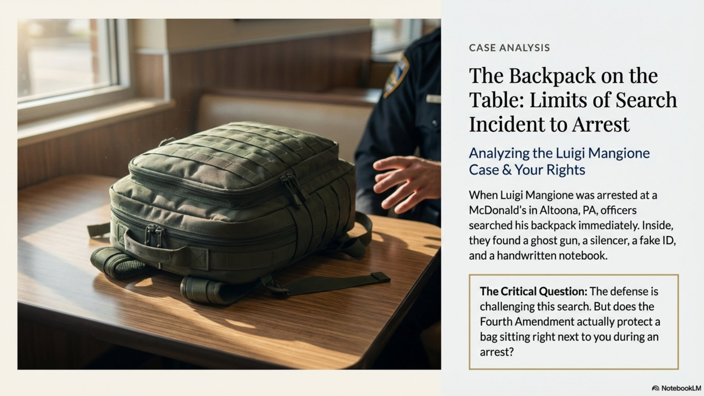
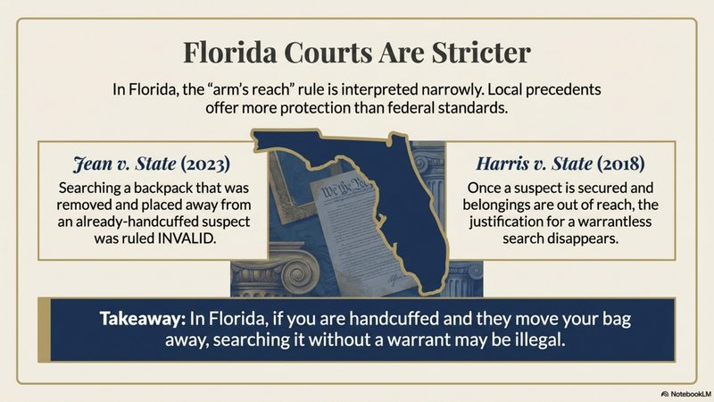

The Mangione Backpack: What Police Can Search When They Arrest You

The Luigi Mangione murder case has captivated the nation. But beyond the headlines lies a legal question that affects anyone who might be arrested: What can police search when they take you into custody?
When Mangione was arrested at a McDonald's in Altoona, Pennsylvania, officers searched his backpack and found a ghost gun, a silencer, a fake ID, and a handwritten notebook. His defense has challenged whether that search was legal. Let's break down what the law actually allows.
The "Search Incident to Arrest" Rule
The Fourth Amendment protects against unreasonable searches. But the Supreme Court has carved out an exception: when police make a lawful arrest, they can search you and the area within your immediate control without a warrant.
This exception exists for two reasons:
- Officer safety: To remove any weapons the arrestee might use
- Preservation of evidence: To prevent the destruction of evidence
The foundational case is Chimel v. California (1969), where the Supreme Court held that police can search the person and the area within their "immediate control" - meaning anywhere they could reach to grab a weapon or destroy evidence.
The Robinson Rule: Your Person Is Fair Game
In United States v. Robinson (1973), the Supreme Court went further. The Court held that when police arrest you, they can conduct a full search of your person - not just a pat-down for weapons.

What This Means in Practice
Police can search your pockets, your wallet, containers on your person, and yes - they can read documents they find. The Robinson rule makes this a categorical rule. Officers don't need to justify why they're searching each item. If it's on your person at arrest, it's searchable.
This is important for the Mangione case. Everything on his person - including documents in his backpack if he was wearing it - falls under the Robinson doctrine. The handwritten notebook? Readable. The fake ID? Examinable. No separate justification needed.
The Timing Question: "Substantially Contemporaneous"
Here's where cases get interesting - and where defense attorneys find opportunities.
The search incident to arrest exception requires the search to be substantially contemporaneous with the arrest. That means the search should happen at roughly the same time as the arrest, not hours later.
In the Mangione case, reports indicate he was eating at a McDonald's when approached. The question becomes: when exactly was the backpack searched, and where was it in relation to him?
- If the backpack was on his back or within arm's reach when officers approached → clearly searchable
- If it was across the room when he was handcuffed → more complicated
- If it was searched later at the station → different rules apply
Most attorneys would conclude the search was likely valid. The arrest happened quickly, the backpack was with him, and the search appears to have been substantially contemporaneous. But the timing and location of the backpack at the moment of arrest matters.
What Florida Law Says
Florida courts have addressed similar issues. In Jean v. State (6th DCA 2023), the court found that searching a backpack that had been removed and placed away from an already-handcuffed suspect was not a valid search incident to arrest.
Similarly, in Harris v. State (3rd DCA 2018), Florida's Third District Court held that once a suspect is secured and their belongings are out of reach, the justification for a warrantless search disappears.
The Key Distinction
- On your person at arrest: Fully searchable (Robinson)
- Within arm's reach, unsecured: Searchable (Chimel)
- Separated from secured arrestee: May require a warrant (Jean, Harris)
Backup Doctrines: Inventory Search and Inevitable Discovery
Even if defense attorneys successfully argue the initial search was improper, prosecutors have backup doctrines:
Inventory Search: When police take your property into custody, they're allowed to inventory its contents. This is considered an administrative function, not a search requiring probable cause. The gun and fake ID would likely have been discovered during booking regardless.
Inevitable Discovery: Under Nix v. Williams (1984), evidence that would have been discovered through lawful means anyway can still be admitted. If police would have obtained a warrant and searched the backpack, the evidence comes in even if the initial search was flawed.
Florida's Stricter Standard
Note that Florida applies a stricter inevitable discovery standard than federal courts. Under Rodriguez v. State, Florida requires "active pursuit" of a warrant - not just that police "could have" gotten one. This gives Florida defense attorneys more room to challenge searches.
What This Means for Your Case
The Mangione case is a high-profile example, but these same rules apply to every arrest in Florida. If you've been arrested and police searched your belongings, ask these questions:
- Where exactly was the item when you were arrested?
- Were you already handcuffed and secured?
- How much time passed between arrest and search?
- Did officers move the item before searching it?
The answers can determine whether evidence is admissible or whether a motion to suppress could change your entire case.
The Bottom Line
Search incident to arrest is one of the most commonly litigated Fourth Amendment issues. The rules seem simple on the surface - police can search you and what's within your reach - but the details matter enormously.
In the Mangione case, the evidence from the backpack search will likely survive legal challenge. The arrest was quick, the items were with him, and multiple backup doctrines support admission. But that analysis happens case by case, fact by fact.
Was Evidence Found During Your Arrest?
If you've been arrested and police searched your person or belongings, the legality of that search could be the key to your defense. An experienced attorney can analyze the circumstances and determine if a motion to suppress is appropriate.
Contact Lotter Law at 407-500-7000 for a free consultation. As a former state trooper and deputy sheriff, I understand how searches are conducted - and when they cross the line.

Jeff Lotter
Criminal Defense Attorney | Former State Trooper
Jeff Lotter is an Orlando criminal defense attorney and former Florida Highway Patrol trooper. He uses his law enforcement experience to build stronger defenses for his clients.
Related Articles
Your Rights During a Traffic Stop
What you're required to do - and what you're not.
Cannabis Odor and Probable Cause
Can police search your car based on marijuana smell alone?
Motion to Suppress: What to Expect
How suppression hearings work and what they can accomplish.
Florida Privacy Rights Beyond Miranda
Constitutional protections that go further than you think.